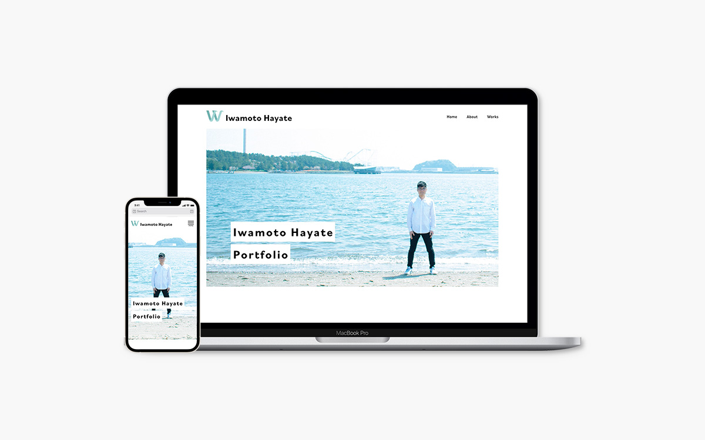
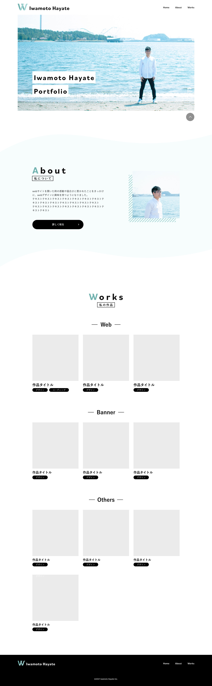
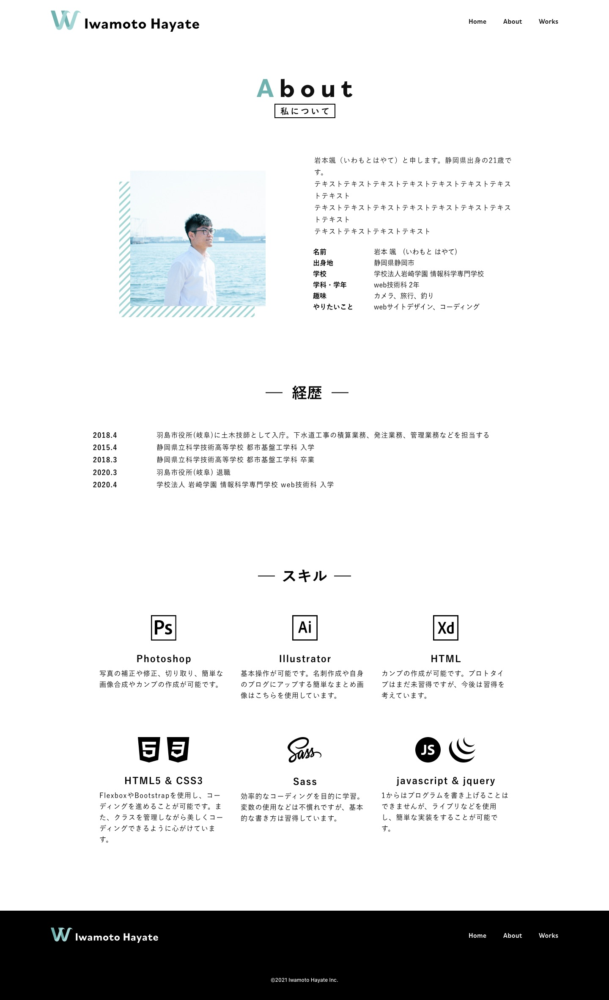
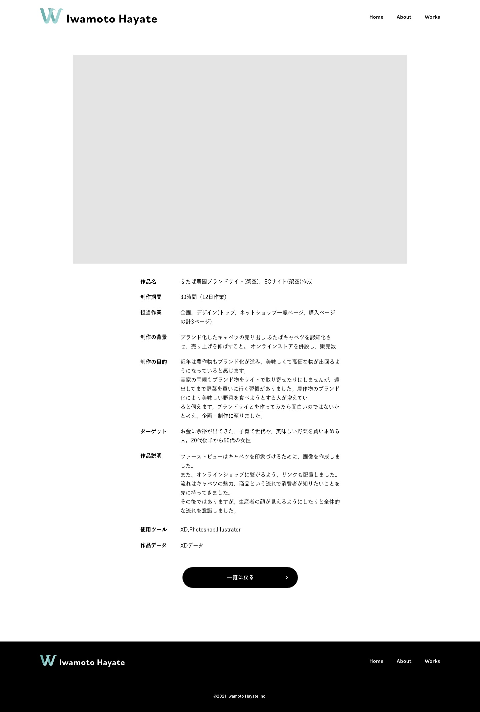
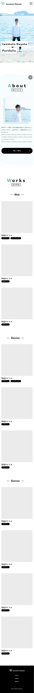
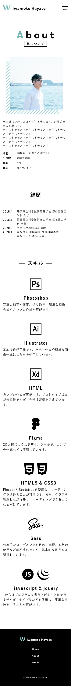
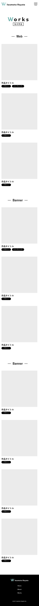
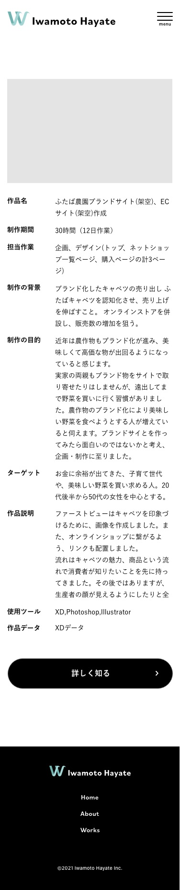

| 作品名 | ポートフォリオサイト作成 |
|---|---|
| 作品データ | 作品リンク |
| 制作期間 | 130時間（約3ヶ月） |
| 担当作業 | デザイン、コーディング |
| 制作の目的 | 自分の作品や人なりをわかりやすくまとめ、企業の採用担当者様に見ていただくことで自分自身をアピールする |
| コンセプト | 企業の採用担当者様に向けて、自身の作品や経歴、自己紹介をわかりやすく、見やすくまとめ、少しでも興味を持っていただくためのサイト |
| ターゲット | 企業の採用担当者様 |
| 作品説明 | 多くのポートフォリオをご覧になる採用担当者様が「見やすいか」を考え、トップページには簡潔な自己紹介と作品一覧を載せました。 ファーストビュには印象に残りやすいよう、写真と自身の目標を明記し、白塗りの上に文字をおくようにすることで可読性を確保しました。 各セクションごとに一度目線を止めていただくため、タイトル部分の一文字目の色を変えることで、目を引くように工夫しました。 配色はロゴに合わせた色を使用しました。配色に合わせて、写真の色味を青っぽくし、統一感が出るようにしました。 作品一覧は画像の背景色意外には色を使わず、落ち着いて見ていただけるようにしました。モックアップ画像を使い、作品のイメージをより掴みやすいようにしました。 また、サイトに動きをつけ、ひとつひとつに注目してもらえるよう、考えました。 |
| 使用ツール | Photoshop,XD |
| 開発ツール | Visual Studio Code |
| 使用言語 | HTML,CSS,JavaScript |
トップページ（PC）
自己紹介ページ（PC）
作品一覧ページ（PC）

作品ページ（PC）
トップページ（SP）
自己紹介ページ（SP）
作品一覧ページ（SP）
作品ページ（SP）
